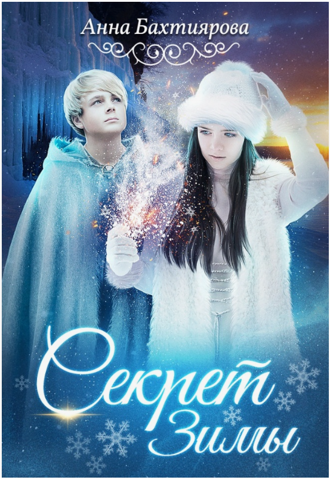
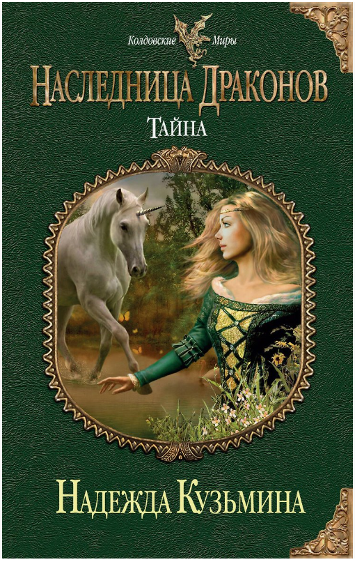
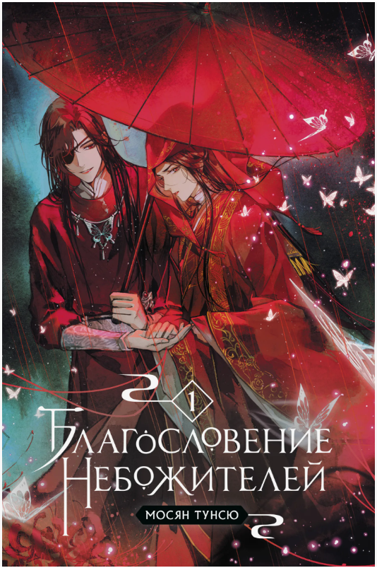
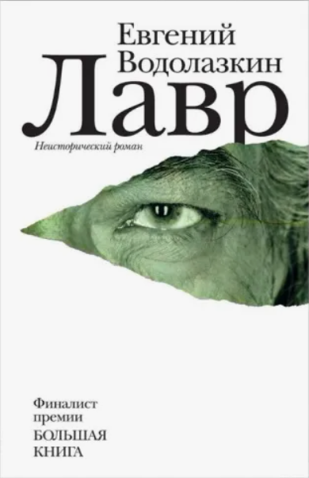
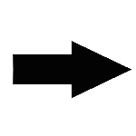

Добро пожаловать на сайт, посвящённый современной литературе!
Чтение — это окно в другие миры, способ пережить сотни жизней, не выходя из комнаты, и возможность погрузиться в мысли и чувства людей разных эпох и культур.Здесь можно найтиинформацию о популярных произведениях современных авторов самых разных жанров и стран. Представленные произведения охватывает широкий спектр литературы — от захватывающих фэнтези-саг и остросюжетных триллеров до глубоких психологических романов и философских творений.
Также по ссылке сверху представленна таблица с возможностью фильтрации, которая позволит быстрее найти, то что вам необходимо.
Приятного чтения и интересных открытий!
Выполнила: Горнак Т.Д. (Б9124-09.03.04(3))